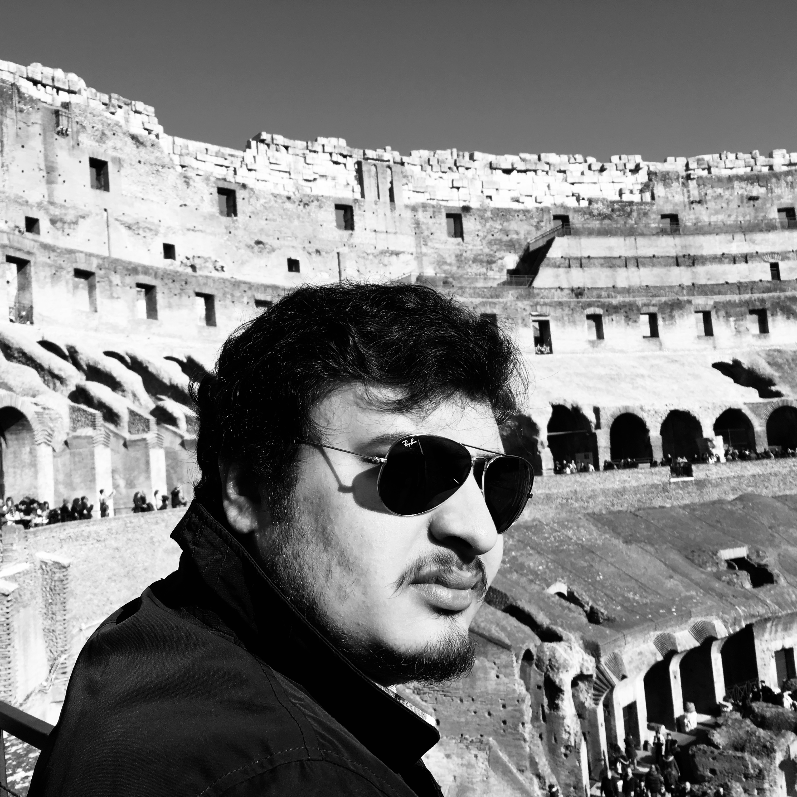

About Me

Shivam Mahaur
Designer working across marketing, design & digital experiences
My Story
I began my design journey after finishing high school at Mayo College, Ajmer, one of India's leading boarding schools. I went on to study Industrial Design at Florence Design Academy in Florence, Italy, where I earned my master's degree and developed a strong foundation in form, function, and problem-solving.
Driven by a growing interest in digital experiences, I later pursued Video Game Art and Design at Media Design School, New Zealand. After completing my studies, I worked at Intents Events (now Division 22) in Auckland as a Designer and 3D Artist, delivering projects for global brands including Samsung ANZ and Philip Morris International. Post-COVID, I returned to India, where I studied Data Science at IIT Madras while building Mahaur Design Studio. I'm currently based in Chandigarh, working across design, marketing, and creative strategy.